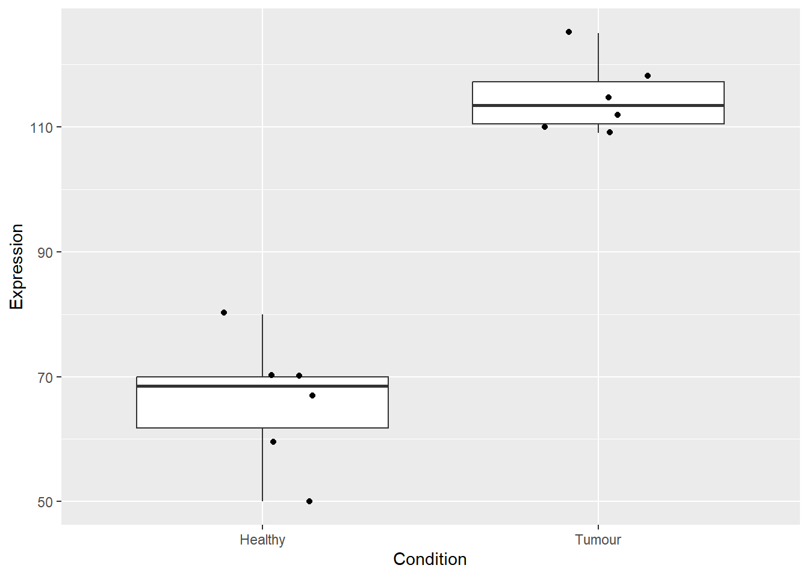
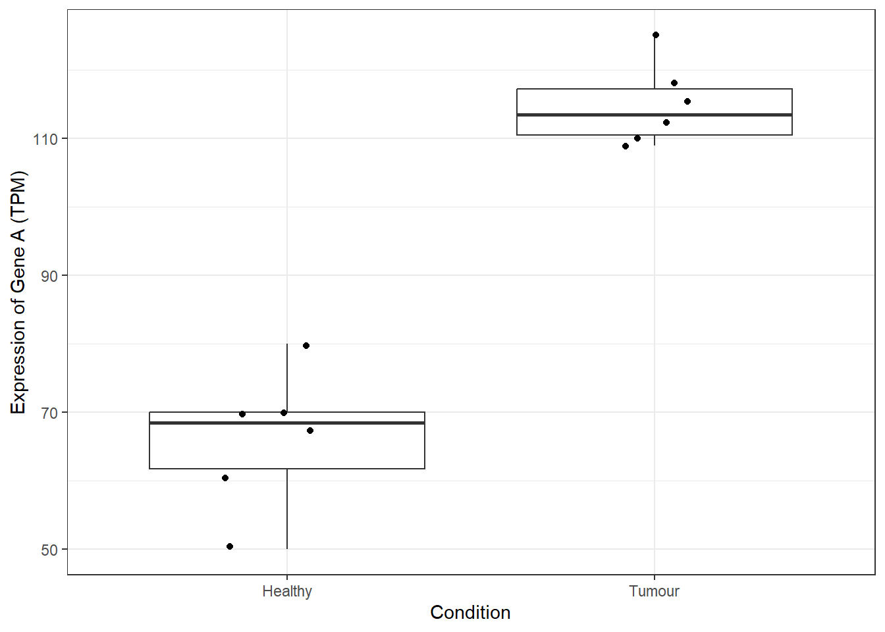
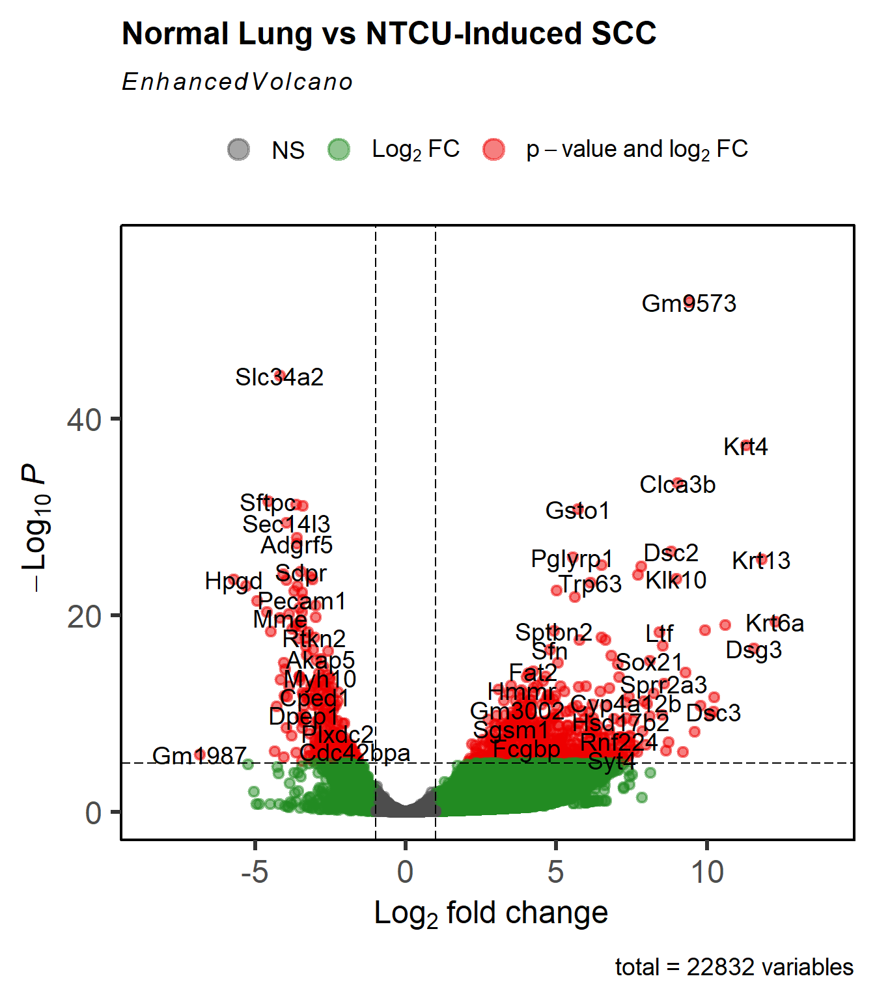
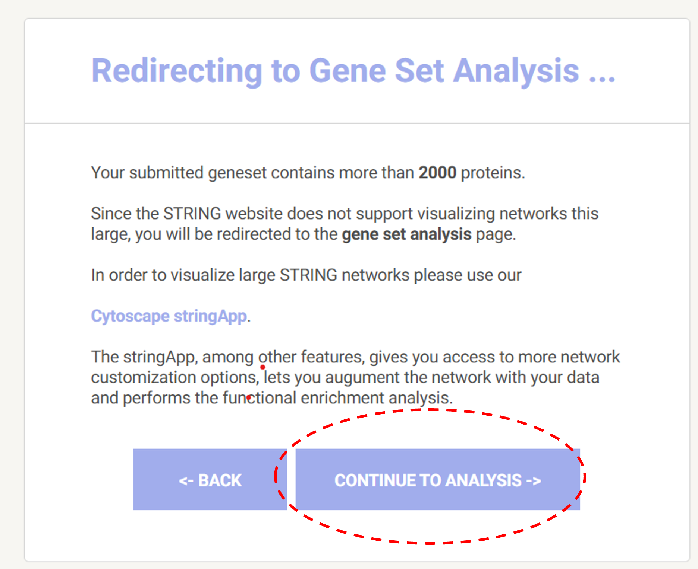
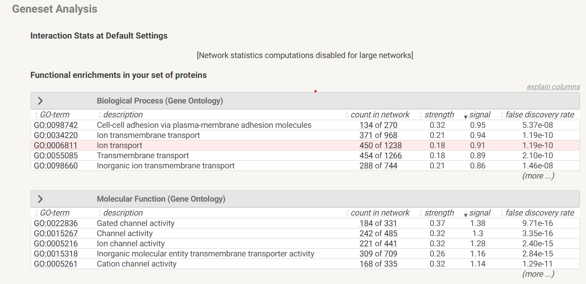

5*7[1] 3549/7[1] 788+9[1] 975-9[1] -4Use R to compute simple addition, subtraction, multiplication, and division
5*7[1] 3549/7[1] 788+9[1] 975-9[1] -4Now that we know how to compute with numbers, we can store results in variables for later use
#Directly assigning variables
x<-10
print(x)[1] 10#Assign a variable to be the result of a mathematical calculation
y<-5^2
print(y)[1] 25#Assign a variable to be the result of two other variables interacting
z<-x*y
print(z)[1] 250Challenge- can you use this knowledge to use R to calculate the volume of a spherical cell where the radius, r is 5 µm. The equation is (4/3) * pi * r^3.
Up to now, we have stored individual values in variables. Vectors allow us to group multiple values in a single object, enabling fast and efficient calculations across whole sets of data
Vectors are sequences of data points of the same type. In R, you create a vector using the c() function, which combines values into one object
Create a numeric vector
vec_num<-c(2,4,6,8,10)
print(vec_num)[1] 2 4 6 8 10Create a character vector
vec_chr<-c("A","B","C","D","E")
str(vec_chr) chr [1:5] "A" "B" "C" "D" "E"Mathematically manipulate a numerical vector
vec_num2<-vec_num*4
print(vec_num2)[1] 8 16 24 32 40Create a new vector by adding two existing vectors
vec_num3<-vec_num+vec_num2
print(vec_num3)[1] 10 20 30 40 50Challenge: Suppose these numbers represent the colony forming units in four different petri dishes c(69,74,50,80). Create a second vector representing a 50% increase in CFUs.
Vectors let us store many values of the same type. To organise multiple numeric values in rows and columns, we can use matrices.
Combine vectors to create a data matrix using cbind (combine columns) function
matrix_num<-cbind(vec_num,vec_num2,vec_num3)
print(matrix_num) vec_num vec_num2 vec_num3
[1,] 2 8 10
[2,] 4 16 20
[3,] 6 24 30
[4,] 8 32 40
[5,] 10 40 50Matrices can only contain one data class, if we were to add a column filled with character data, the whole matrix would convert to a character type
matrix_chr<-cbind(matrix_num,vec_chr)
print(matrix_chr) vec_num vec_num2 vec_num3 vec_chr
[1,] "2" "8" "10" "A"
[2,] "4" "16" "20" "B"
[3,] "6" "24" "30" "C"
[4,] "8" "32" "40" "D"
[5,] "10" "40" "50" "E" This can be overcome by creating a data frame which allows the storing of multiple data types
#Convert the data matrix to a data frame
example_frame<-as.data.frame(matrix_num)
# the $ operator allows columns in data frames to be called, modified, and assigned
example_frame$chr_data<-vec_chr
#inspect the data frame
print(example_frame) vec_num vec_num2 vec_num3 chr_data
1 2 8 10 A
2 4 16 20 B
3 6 24 30 C
4 8 32 40 D
5 10 40 50 EWe can also create data frames from scratch. Here, we make some dummy data representing the expression of geneA in patient-derived tumour tissue compared to healthy tissue for 6 patients.
# Create dummy gene expression data
gene_data <- data.frame(
Sample = paste0("Sample", 1:12),
Condition = rep(c("Healthy", "Tumour"), each = 6),
Expression = c(
70, 67, 70, 50, 60, 80, # Healthy
110, 115, 125, 112, 118, 109 # Tumour
)
)
# Inspect the data
gene_data Sample Condition Expression
1 Sample1 Healthy 70
2 Sample2 Healthy 67
3 Sample3 Healthy 70
4 Sample4 Healthy 50
5 Sample5 Healthy 60
6 Sample6 Healthy 80
7 Sample7 Tumour 110
8 Sample8 Tumour 115
9 Sample9 Tumour 125
10 Sample10 Tumour 112
11 Sample11 Tumour 118
12 Sample12 Tumour 109str(gene_data)'data.frame': 12 obs. of 3 variables:
$ Sample : chr "Sample1" "Sample2" "Sample3" "Sample4" ...
$ Condition : chr "Healthy" "Healthy" "Healthy" "Healthy" ...
$ Expression: num 70 67 70 50 60 80 110 115 125 112 ...Now we have learnt how to create variables, vectors, matrices, and data frames, it is next pertient to be able to visualise that data. We will use a package called ggplot2 to achieve this. We will use our dummy gene expression data as an example.
Plots made in ggplot2 are built in layers. In the base layer we may define the axes of the plot.
This is achieved below, in this example we use a pipe %>%. The pipe takes the data on its left and sends it straight into the function on its right.
#Load the package that contains the ggplot2 package and functions
library(tidyverse)
#Create the base layer
gene_data %>%
ggplot(aes(x=Condition, y = Expression))
Now lets add another layer and overlay a boxplot onto the plot
#Create the base layer
gene_data %>%
ggplot(aes(x=Condition, y = Expression))+
geom_boxplot()
Now overlay the data points. We are going the “jitter” them in the x axis so they are easier to visualise
#Create the base layer
gene_data %>%
ggplot(aes(x=Condition, y = Expression))+
geom_boxplot()+
geom_jitter(width=0.2) # width informs how far points are able to jitter
We could improve the theme of the plot. Firstly we could use a preset theme. It would also be good to change the axis titles to something more appropiate
#Create the base layer
gene_data %>%
ggplot(aes(x=Condition, y = Expression))+
geom_boxplot()+
geom_jitter(width=0.2)+ # width informs how far points are able to jitter
theme_bw()+ #pre made theme
labs(x="Condition",y="Expression of Gene A (TPM)")
Make further custom edits to the theme to remove grid lines, increase font size, and change font colour to black.
#Create the base layer
gene_data %>%
ggplot(aes(x=Condition, y = Expression))+
geom_boxplot()+
geom_jitter(width=0.2)+ # width informs how far points are able to jitter
theme_bw()+ #pre made theme
theme(panel.grid.major = element_blank(),
panel.grid.minor = element_blank(),
axis.title = element_text(size=14, face="bold", colour="black"),
axis.text=element_text(size=12, colour="black"))+
labs(x="Condition",y="Expression of Gene A (TPM)")
library(DESeq2)
library(EnhancedVolcano)
library(tidyverse)count_data <- read.table(
file = "data/GSE129482_laura_0417.counts.txt",
row.names = 1,
header = TRUE
)
meta_data <- read.csv("data/RNAseq_GSE129482_metadata.csv")
head(count_data) A01 A03 A06 A07 A08 D36_SCC D39_SCC D42_SCC D44_SCC E57_SCC
Plekhg2 125 64 255 94 35 44 148 112 61 43
Plekhg3 93 27 224 165 82 223 346 118 61 292
Plekhg1 133 98 219 186 68 126 304 93 62 180
Plekhg6 2 4 5 0 0 17 184 82 51 120
4930592I03Rik 0 0 4 20 1 6 1 21 12 1
Plekhg4 0 0 2 1 0 8 19 27 21 3head(meta_data) Sample Condition
1 A01 Normal
2 A03 Normal
3 A06 Normal
4 A07 Normal
5 A08 Normal
6 D36_SCC NTCU_SCCcount_data <- as.matrix(count_data)
meta_data <- as.matrix(meta_data)
if (any(duplicated(row.names(count_data)))) {
print("Duplicates Present")
} else {
print("No Duplicates Present")
}[1] "No Duplicates Present"nrow(meta_data) == ncol(count_data)[1] TRUEdds <- DESeqDataSetFromMatrix(
countData = count_data,
colData = meta_data,
design = ~ Condition
)dds <- DESeq(dds)
res <- results(dds)res <- res[order(res$padj), ]
res <- as.data.frame(res)
res <- res[!(res$baseMean == 0), ]
res <- res[!is.na(res$padj), ]
res <- rownames_to_column(res, var = "gene")EnhancedVolcano(
res,
lab = res$gene,
x = "log2FoldChange",
y = "padj",
gridlines.major = FALSE,
gridlines.minor = FALSE,
border = "full",
title = "Normal Lung vs NTCU-Induced SCC"
)
Can you use your ggplot2 skills to create a custom visualisation of the dataset?
sig_up <- res %>%
filter(
padj < 0.05,
log2FoldChange >= 1
)
upregulated_genes <- sig_up$genewrite.table(
upregulated_genes,
file = "data/upregulated_genes.txt",
quote = FALSE,
row.names = FALSE,
col.names = FALSE
)In the previous workshop, we performed a differential gene expression analysis with DESeq2 and extracted a .txt file containing genes that were significantly upregulated in NTCU-induced squamous cell carcinoma samples (log2 fold change ≥ 1, adjusted p-value < 0.05).
In this workshop, we will use StringDB to perform a Gene Ontology (GO) analysis. GO analysis allows us to determine which biological processes, molecular functions, and cellular components are enriched among the upregulated genes, providing insights into the functional impact of these genes in cancer progression.
Firstly navigate to the Stringdb website https://string-db.org/. Then selectBrowse to begin a gene set analysis.

Now upload the upregulated_genes.txt file and press SEARCH. Then select CONTINUE TO ANALYSIS

Select Mus Musculus as the organism

Press CONTINUE until you can see the results of the gene set analysis

Scroll down to view the graphical representations of enriched biological processes.
Examine the most significantly enriched terms and consider:
Which biological pathways are upregulated in squamous cell carcinoma?
How do these pathways relate to the disease biology?
Formulate a hypothesis about why these processes might be important in tumour progression.